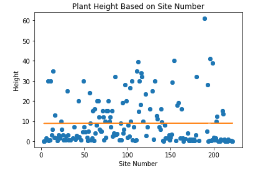
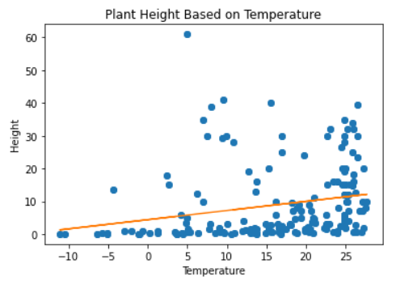
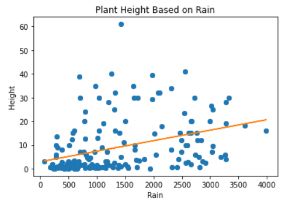
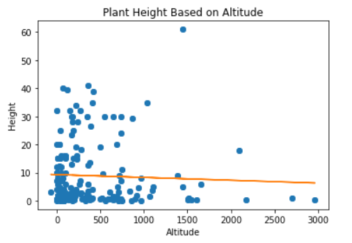

Access the Jupyter code here
When dealing with linear regression, scatter plots are useful because they can demonstrate statistical data such as the average, max, or min of dependant data. Here is the portion of our code that created the scatter plot.
This lab focused on the height of plants (dependent) based on temperature, rain, altitude, and site number (independent). Here are the scatter plots that were created with our Jupyter code.
  